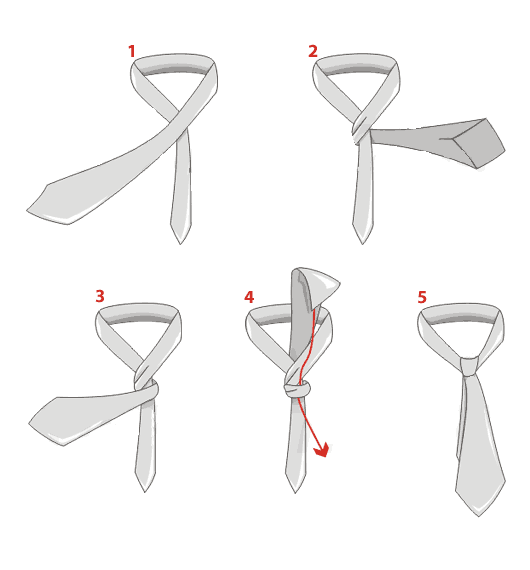
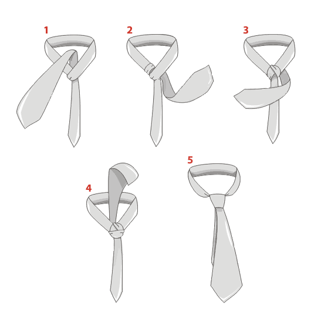

Nestes anos em que trabalho como organizadora e cerimonialista tenho observado que nas festas de casamento existe um detalhe, na vestimenta masculina, que faz uma diferença enorme. A gravata! Sim, ela mostra com quanto "esmero" o homem a vestiu!
Tenho visto, sem acreditar, que elas também foram "facilitadas" com zíperes!
Um horror!
Lembro dos meus filhos. Eu nasci numa família onde só tinha meninas e ao me casar só tive meninos. Eu tive que aprender muito sobre o universo masculino e entre estas "coisas" todas, como dar nó em gravatas. Já tinha um pequeno conhecimento, mas a prática sempre nos mostra as dificuldades da teoria.
E, com o meu trabalho, tive além de aprender mais, buscar novos e inusitados nós para poder diferenciar os noivos de outros convidados.
Observar o "desfile" de gravatas em um evento nos ensina muito:
- Tem os que fazem da gravata sua marca pessoal;
- Usam a gravata para chamar a atenção;
- Os que nem sequer sabem o que é uma gravata!
E tem, é claro, aqueles que somente a usam, como se fosse uma camiseta qualquer num lindo dia ensolarado, displicentemente.
Vou lhe ensinar 3 tipos de nós:
Nó simples
Aquele nó tradicional. Uma forma simples e fácil de usar. Pode ser feito em todos os tipos de gravatas, adequada para todos os tipos de homens (magros, fortes, com o pescoço menos ou mais largos).
Nó duplo
Incluindo uma segunda volta, obtendo um nó duplo. Nesse formato ela ficará mais volumosa, ideal para camisas com colarinho mais largo. Deve ser usada em gravatas com tecidos mais finos.

Nó Windsor
Um nó para aquelas gravatas mais estreitas e alongadas. Conhecido como "Nó Inglês", e muito famosa pois ela se atribui a um look de gentleman. Ajusta-se a camisas com colarinhos clássicos.
Saibam, homens, que uma gravata, com nó bem feito, em harmonia com seu traje, faz com que muitos olhares de admiração se voltem para vocês!
Pensem, antes do seu próximo evento, que ela, a gravata, pode fazer toda a diferença. Se não souber dar um nó, procure quem o faça! Se não encontrar ninguém, me avise!